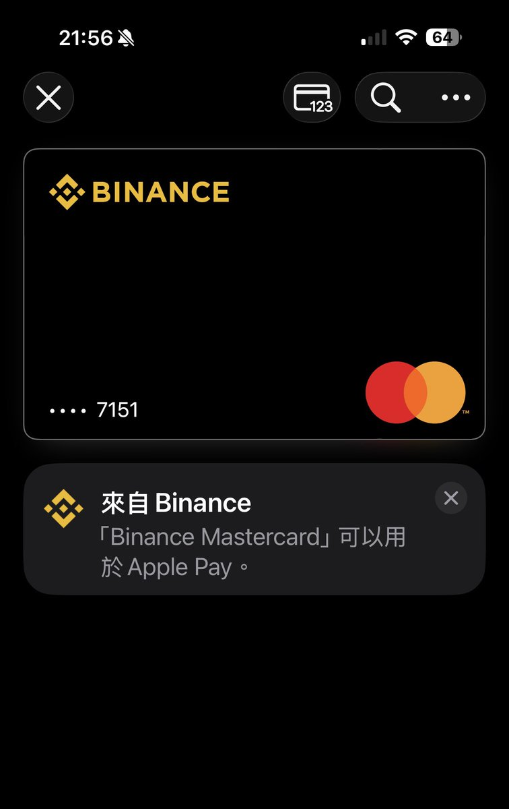

奶昔🥤
@realNyarime
券商 叫 牛，昵称 牛牛
银行 叫 象，昵称 象象
什么时候香港再开个鸡鸡银行

五道口
@wdknews
富途 牛牛 被 北京朝阳 群众 举报 推广内地用户开户
被点名 批评后
投资了 天星银行
富途的老板娘喜欢宠物，于是 富途的老板把他下面的
产品全部 用宠物的名字命名了
券商 叫 牛 昵称 牛牛
银行 叫 象 昵称 象象 （表面你开的是 银行，这其实就是一层壳， 其本质 其实开通 开通 https://t.co/VCjEuDtQVb